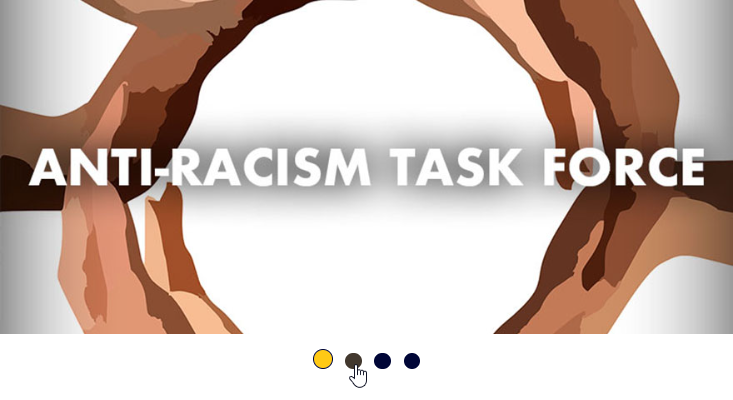

Microinteractions - IDM241
Final - Information
Triggers
- Hover On/Off Slideshow
- Hover On/Off Learn More Button
- On Click Hold Learn More Button
- On Click Release Learn More Button
- Hover On/Off Dot Indicator
- Click On Dot Indicator
Rules
Frontend
Hover On Slideshow
- Overlay color #000637 with Transparency from 75% to 90% transition-duration 3 seconds.
- Text font style Futura, Light Condense,color: #FFFFFF, font-size: 50, line-height: 60, letter-space: 5%, left-aligned, transitions from bottom left at 55% Transparency to center left at 100% over a duration of 3 seconds.
- Learn more button (shape: rectangle with 33% rounded edge, color:#FFC915, font-style: futura, light condense, black, font-size: 35, line-height: 60, letter-space: 5%) transparency changes from 65% to 100% over 3 seconds with a white drop shadow (x:0, y:4, blur:4, spread:0, transparency:55%).
- Slide Number Indicator (shape: rectangle with 33% rounded edge; color:#000637; height: 29px; width:165px;) located at bottom right of slide with 5 #FFC915 colored 2px stroke circles center aligned, with one circle filled with #FFC915, indicating slide number.
Hover Off Slideshow
- Overlay color #000637 with Transparency from 90% to 75% to 0% transition-duration between each percent is 3 .
- Text font style Futura, Light Condense,color: #FFFFFF, font-size: 50, line-height: 60, letter-space: 5%, left-aligned, transitions from center left with a 100% tranparancy to 55% to 0% with a duration of 3 seconds between percents (synchronized with overlay transition)
- Learn more button (shape: rectangle with 33% rounded edge, color: #FFC915, font-style: futura, light condense, black, font-size: 35, line-height: 60, letter-space: 5%) transparency changes from 100% to 55% to 0% over 3 seconds between percents.
Hover On Learn More Button
- Background color changes to #ffdf75 with a box-shadow of 3px along the bottom in #ffffffc5
- Cursor changes from default to pointer
Hover Off Learn More Button
- Background color changes to #ffc915 with no box-shadow
- Cursor changes from pointer to default
On Click Hold Learn More Button
- Background color changes to #002f6c with a box-shadow of 5px along the bottom in #ffffffc5
- Cursor changes from pointer to progress
- Button translates 11px down from original position.
- Button Text Color changes to #ffc915
- Leads to the image's learn more page
On Click Release Learn More Button
- Background color changes to #ffc915 with no box-shadow
- Cursor changes from progress to pointer
- Button translates 11px up to original position.
- Button text changes to a loading spinner that is rotating
Hover On Dot Indicator
- When hovering over dot indicators that are not linked to the current displayed slide, dot color will change with a fade from #000637 to #ffc915
- Cursor changes from default to pointer
Hover Off Dot Indicator
- When hovering off dot indicators that are not linked to the current displayed slide, dot color will change with a fade from #ffc915 to #000637
- Cursor changes from pointer to default
Click On Dot Indicator
- The dot indicator that was clicked on will have a background color that changes to #ffc915 with a border of 2px solid #000637
- The dot indicator that was previously selected will fade from a background color of #ffc915 to #000637.
- Loads the newly selected slide, based on the dot indicator that was clicked
Backend
- When Dot indicator is clicked, system checks and loads the slide (with the connected learn more link) that is connected or linked to that specific dot indicator.
- After learn more button is cliCreates a delay between clicked Learn More button and new page loading in new window.
Feedback
Frontend
Hover On Slideshow
- Overlay color #000637 with Transparency from 75% to 90% transition-duration 3 seconds.
- Text font style Futura, Light Condense,color: #FFFFFF, font-size: 50, line-height: 60, letter-space: 5%, left-aligned, transitions from bottom left at 55% Transparency to center left at 100% over a duration of 3 seconds.
- Learn more button (shape: rectangle with 33% rounded edge, color:#FFC915, font-style: futura, light condense, black, font-size: 35, line-height: 60, letter-space: 5%) transparency changes from 65% to 100% over 3 seconds with a white drop shadow (x:0, y:4, blur:4, spread:0, transparency:55%).
- Slide Number Indicator (shape: rectangle with 33% rounded edge; color:#000637; height: 29px; width:165px;) located at bottom right of slide with 5 #FFC915 colored 2px stroke circles center aligned, with one circle filled with #FFC915, indicating slide number.
Hover Off Slideshow
- Overlay color #000637 with Transparency from 90% to 75% to 0% transition-duration between each percent is 3 .
- Text font style Futura, Light Condense,color: #FFFFFF, font-size: 50, line-height: 60, letter-space: 5%, left-aligned, transitions from center left with a 100% tranparancy to 55% to 0% with a duration of 3 seconds between percents (synchronized with overlay transition)
- Learn more button (shape: rectangle with 33% rounded edge, color: #FFC915, font-style: futura, light condense, black, font-size: 35, line-height: 60, letter-space: 5%) transparency changes from 100% to 55% to 0% over 3 seconds between percents.
Hover On Learn More Button
- Background color changes to #ffdf75 with a box-shadow of 3px along the bottom in #ffffffc5
- Cursor changes from default to pointer
Hover Off Learn More Button
- Background color changes to #ffc915 with no box-shadow
- Cursor changes from pointer to default
On Click Hold Learn More Button
- Background color changes to #002f6c with a box-shadow of 5px along the bottom in #ffffffc5
- Cursor changes from pointer to progress
- Button translates 11px down from original position.
- Button Text Color changes to #ffc915
- Leads to the image's learn more page
On Click Release Learn More Button
- Background color changes to #ffc915 with no box-shadow
- Cursor changes from progress to pointer
- Button translates 11px up to original position.
- Button text changes to a loading spinner that is rotating
Hover On Dot Indicator
- When hovering over dot indicators that are not linked to the current displayed slide, dot color will change with a fade from #000637 to #ffc915
- Cursor changes from default to pointer
Hover Off Dot Indicator
- When hovering off dot indicators that are not linked to the current displayed slide, dot color will change with a fade from #ffc915 to #000637
- Cursor changes from pointer to default
Click On Dot Indicator
- The dot indicator that was clicked on will have a background color that changes to #ffc915 with a border of 2px solid #000637
- The dot indicator that was previously selected will fade from a background color of #ffc915 to #000637.
- Loads the newly selected slide, based on the dot indicator that was clicked
Loops/mode
- When learn more button is clicked, the linked Learn More page will display
- When dot indicator is clicked, the slide linked to the dot indicator will display
Slideshow Interactions
Learn More Interactions
Hover On/Off Learn More Button
On Click Hold Learn More Button
On Click Release Learn More Button
Dot Indicator Interactions
Hover On/Off Dot Indicator



Click On Dot Indicator